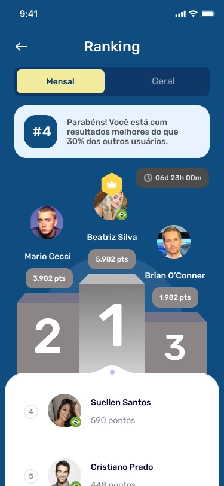
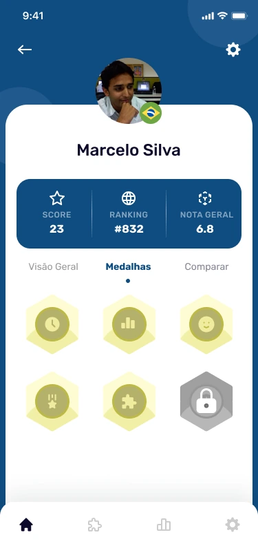
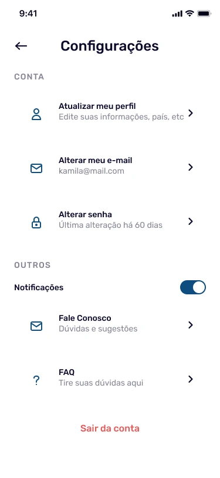

Indicadores com contexto
O painel combina quantidade de exercícios e desempenho por categoria. A composição dá destaque à leitura do progresso antes dos detalhes.
Brain Restart
Uma experiência de exercícios cognitivos que organiza atividades, desempenho e conquistas em uma mesma linguagem.
Explore o projeto
EscopoPesquisa, fluxos, wireframes, UI e prototipação.
CriaçãoSolucci
ApresentaçãoDesign de produto e experiência. Interfaces originais do projeto.
Em um produto com exercícios recorrentes, escolher uma atividade é apenas parte da experiência. Também é preciso compreender o que já foi feito, reconhecer a evolução e encontrar o próximo passo.
A interface reúne visão geral, desempenho por categoria, medalhas e ranking. Azul e amarelo organizam a hierarquia entre navegação, indicadores e recompensas.
Explore a visão geral, as medalhas e o ranking. A tela do painel pode ser rolada dentro do aparelho.
Cada área responde a uma pergunta: como estou, o que conquistei e como sigo participando.
As pontuações e os nomes nas interfaces são conteúdo do protótipo, não resultados medidos do produto.
01 / 04Visão geral e progresso
Não foi possível carregar a navegação. As telas estão disponíveis abaixo.


O painel combina quantidade de exercícios e desempenho por categoria. A composição dá destaque à leitura do progresso antes dos detalhes.
Medalhas, posição e comparação oferecem formas diferentes de representar a participação. As recompensas ficam próximas dos indicadores de desempenho.
A barra inferior mantém as áreas principais à mão. As configurações agrupam conta, notificações e suporte em uma estrutura previsível.
Leitura das etapas e dos caminhos representados nas interfaces.
Ler o resumo de atividades e desempenho.
Explorar medalhas e conquistas.
Consultar a posição no ranking.
Controlar preferências e notificações.
O trabalho de pesquisa, fluxos, wireframes e prototipação foi traduzido em interfaces que conectam rotina, indicadores e reconhecimento. A apresentação reúne as decisões de experiência e as telas originais do projeto.
Projeto apresentado pelo trabalho de design e prototipação.